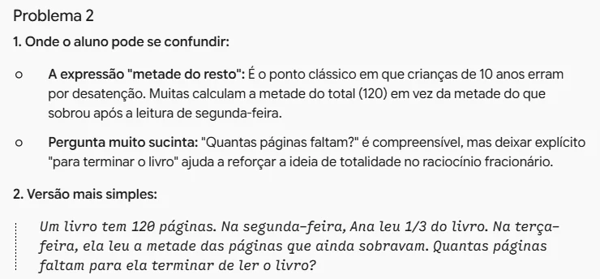
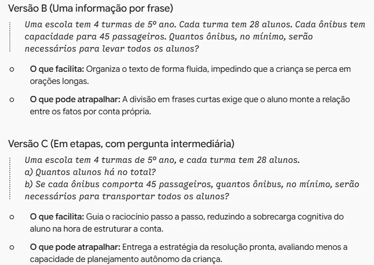
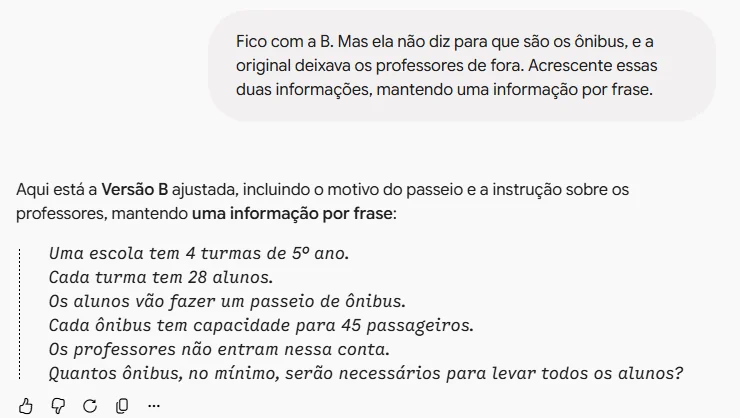

Enunciados mais claros
Peça ao Gemini para revisar os problemas da sua prova, compare versões diferentes e escolha a que o aluno entende melhor
Sabendo-se que uma escola possui 4 turmas de 5º ano, cada uma delas composta por 28 alunos, e que, para a realização de uma excursão, serão utilizados ônibus com capacidade para 45 passageiros, determine a quantidade mínima de ônibus necessária para transportar todos os alunos, desconsiderando-se os professores.
Uma escola tem 4 turmas de 5º ano.
Cada turma tem 28 alunos.
Os alunos vão fazer um passeio de ônibus.
Cada ônibus tem capacidade para 45 passageiros.
Os professores não entram nessa conta.
Quantos ônibus, no mínimo, serão necessários para levar todos os alunos?
Avaliação de Matemática5º ano
Nome
O que você quer avaliar?
- Você pensou as questões baseado no conteúdo, nos números e no que quer avaliar.
- Porém, talvez a forma de perguntar não esteja ainda tão clara: frase longa, palavra difícil, informação que poderia ser interpretada de dois jeitos diferentes.
- Na hora da prova, a criança lê sozinha. Se ela erra a resposta porque não entendeu o texto do problema, talvez a prova não esteja medindo o conhecimento de matemática.

Abra o Gemini
- No computador ou Chromebook.
- Por não tratar dados sensíveis, o ChatGPT também pode fazer a tarefa.
- Comece uma conversa nova: tudo o que você pedir depois vai se apoiar nesta primeira mensagem.
Sou professor do 5º ano (10 anos) e preparei uma prova de matemática. Revise os enunciados abaixo pensando em quem vai ler: uma criança de 10 anos, sozinha, na hora da prova. Para cada problema: 1. Diga onde o aluno pode se confundir (palavra difícil, frase longa, informação que dá para entender de dois jeitos). 2. Escreva uma versão mais simples. Regras: não mude os números, a pergunta nem a matemática que está sendo avaliada. No fim, mostre a resposta da versão original e da versão nova de cada problema, para eu conferir que não mudou. Problema 1: … Problema 2: … Problema 3: …
Peça a revisão
- Diga quem vai ler: idade, ano e a situação de prova. É isso que orienta o que é "simples".
- "Não mude os números nem a matemática": sem essa regra, a IA pode tentar facilitar a conta junto com o texto, e a questão deixa de avaliar o que você queria.
- Troque as reticências pelos seus problemas. Para pular linha sem enviar: Shift + Enter.

Leia onde o aluno tropeça
- Para cada problema, o Gemini aponta onde a leitura pode falhar e explica por quê.
- No Problema 2, "metade do resto": muita criança calcula a metade das 120 páginas, e não das 80 que sobraram.
- Você conhece a sua turma. Concorde, discorde e decida o que vale mudar.
Agora só o Problema 1. Escreva três versões diferentes, com os mesmos números e a mesma pergunta: A) a mais curta possível; B) uma informação por frase; C) em etapas, com perguntas menores antes da pergunta final. Para cada versão, diga em uma linha o que ela facilita e o que pode atrapalhar. Não escolha por mim.
Peça variações
- Uma versão só é uma opinião. Com três jeitos diferentes de escrever, você tem com o que comparar.
- Diga como cada versão deve ser diferente. Assim elas não saem parecidas.

Compare as versões
- Leia cada versão como se fosse o aluno, de preferência em voz alta.
- A versão C é a mais fácil, mas o próprio Gemini avisa: ela entrega a estratégia. Muda o que a prova avalia.
- Repare no que sumiu. A versão B não diz para que são os ônibus e esqueceu os professores.

Escolha e ajuste
- Escolha a que ficou mais clara para a sua turma, não a mais bonita.
- Se faltar algo, peça o ajuste exato: o que acrescentar e o que manter.
- Pode também juntar duas versões, ou editar você mesmo.